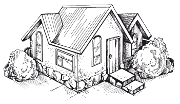

Внешняя отделка дома. Введение.


Понятие «дизайн» (от англ. design– дословно) означает «проектирование», «проект», «чертеж». Сюда включен не только сам процесс проектирования, но и конечный результат – готовое творение. Поэтому дизайн – это особая наука со своими секретами проектирования, и чтобы ее освоить, необходимо знать различные приемы, правила, законы, тенденции и стили, существующие в строительстве.
В первую очередь они доступны дизайнеру-профессионалу, однако при определенном упорстве и трудолюбии освоить азы дизайна может любой человек, задавшийся целью построить свой дом, желающий сделать его неповторимым и особенным.
Грамотно спроектированный и построенный дом должен вписываться в окружающий ландшафт, создавать максимум удобств для проживания, вносить в семейный быт уют и душевный комфорт. Поэтому, начиная строительство, прежде всего следует учесть ряд обстоятельств: близость или отдаленность от жилых и иных объектов, наличие или отсутствие газа, воды, электричества, подъездных дорог и их транспортную доступность. Внешние факторы, красивый вид окрестности, речка или ручей, небольшой лесок или рощица поблизости также окажут огромное влияние на ваш дом, сумеют подчеркнуть своеобразие и наиболее выигрышные позиции здания. При обследовании участка, на котором будет построен дом, нужно определить зону восприятия всей охватываемой глазом окрестности. Постарайтесь представить, как будет выглядеть здание с разных точек. Заранее следует увидеть динамику внешнего вида дома через пять, десять и более лет. Только после этого можно приступить к строительству.
Народная мудрость говорит: человека встречают по одежке. В наши дни о человеке часто судят также по дому, в котором он живет. Именно потому он должен выглядеть достойно. При строительстве следует исходить из того, что дом – это не только осуществление вашей мечты о собственной крыше над головой, дом – это своеобразное олицетворение самого человека, его вкусов, пристрастий, взглядов на мир и происходящие события. Поэтому здание, которое предстоит построить, будет в определенной мере характеризовать вас самого.
Современная строительная индустрия в последние годы продвинулась далеко вперед. Идет поиск новых конструктивных решений, новых технологий, появился широкий выбор новейших строительных материалов. Обо всем этом можно узнать из нашей книги.
В каждой главе делается акцент на конструктивные особенности жилища, различные способы его украшения, подробно рассказывается о требованиях, предъявляемых к современным окнам, дверям, крыше, ландшафтному дизайну, о необходимости поддержания уюта, содержательности, выразительности всего приусадебного участка и здания на нем как акцентирующего центра.
Одним словом, книга призвана помочь тем, кто мечтает о красивом и уютном доме, в котором бы комфортно жилось всем членам семьи.
По материалам книги Максима Сергеевича Жмакина
" Внешняя отделка загородного дома и дачи. Сайдинг, камень, штукатурка. "
А также из других источников Интернет
Уважаемый Читатель - после ознакомления с Книгой
рекомендую Вам заказать ее бумажное издание.